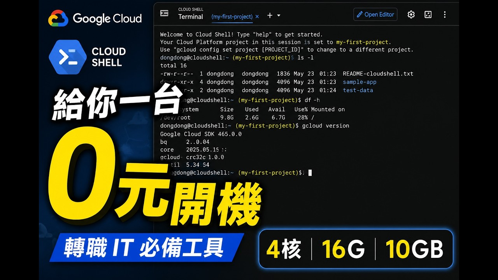

評估報告顯示，Google Cloud 提供的 Cloud Shell 免費 Linux 環境，具備 4 核心 CPU、16GB 記憶體與 10GB 硬碟空間，無需信用卡即可啟用，為資訊科技學習者提供接近業界實務的操作場域。

本次評估報告針對資訊科技轉職學習者常用的免費實作環境進行分析，結果顯示 Google Cloud 提供的 Cloud Shell 免費 Linux 環境，配備 4 核心 CPU、16GB 記憶體與 10GB 硬碟空間，且啟用流程無需任何信用卡資訊。使用者只需透過瀏覽器登入 GCP Console，即可在 Windows 或 macOS 上進入完整的 Linux 終端機，完全免去本機安裝的步驟。
研究進一步指出，該環境已預先安裝多種程式語言、容器與版本控管工具，能支援程式開發、網路測試與系統管理練習。專家分析認為，此類免付費的實作平台，有效降低了初學者進入資訊產業的門檻，同時為自學者與轉職者提供接近業界實務的操作場域。
Cloud Shell 免費提供 4 核心 CPU、16GB 記憶體與 10GB 儲存空間，且全程無需信用卡，僅需瀏覽器登入即可啟用，大幅降低初學者進入 Linux 環境的門檻。
根據數據資料，該環境已預先配置多項常用工具，涵蓋 Linux 基本指令、程式語言、網路指令與文字編輯器。其中 cd、ls、mkdir 等基礎指令可直接執行，方便進行檔案與權限管理。程式語言方面，Python、Java 與 Node.js 均已安裝，學習者撰寫程式後可立刻執行，無需額外設定。
網路測試指令如 ping、curl 可用來檢查主機連線與 API 回應。此外，Docker、Kubernetes、Git 與 Terraform 等進階工具也已就緒，代表容器化、版本控管與基礎架構即程式碼（IaC）等業界常用技術已備妥，學習者不需自行安裝。
預裝 Python、Java 與 Node.js 等主流語言，學習者可直接撰寫並執行程式，無需額外安裝。
內建 Docker 與 Kubernetes，支援容器化應用開發與測試，貼近雲端原生開發流程。
Git 與 Terraform 等工具已就緒，方便學習者進行程式碼版本管理與基礎架構即程式碼練習。
提供 ping、curl 等指令，可測試主機與 API，並支援系統管理與效能查詢。
業界觀察顯示，該環境的檔案上傳與下載機制相當簡便，使用者可將程式檔或圖片上傳至雲端，也能將雲端檔案下載至本機。除了終端機內的文字編輯器，圖形化編輯介面進一步降低了指令操作門檻。在實際操作中，學習者可編輯 Node.js 程式，並透過 8080 通訊埠預覽網頁，確認執行結果後以 Ctrl+C 停止服務，完整模擬開發與除錯流程。
使用瀏覽器開啟 Google Cloud Platform 主控台，登入帳號。
點選「啟用 Cloud Shell」按鈕，同意服務條款並完成授權。
終端機即時開啟，可直接執行 cd、ls、mkdir 等基本 Linux 指令。
利用預裝的 Python、Node.js 等環境，編寫程式碼並立即執行。
使用 8080 通訊埠預覽網頁，確認執行結果後停止服務，模擬開發除錯流程。
專家分析提醒，此免費環境仍存在一定資源限制。高負載任務可能因連線逾時而觸發重啟，執行中的暫存資料將被清空。對外 IP 為浮動位址，使用者可透過 curl ifconfig.me 指令查詢當前 IP。每次重新進入環境時，需要重新安裝套件，但家目錄中的檔案會保留，除非長期未登入導致帳戶清理。
環境重置雖然帶來不便，卻能確保系統狀態乾淨，避免錯誤設定持續累積。專家建議，學習者可將安裝指令整理成指令碼，以便在重建環境時快速恢復所需工具。
| 維度 | Cloud Shell 免費環境 | 本機虛擬機 |
|---|---|---|
| 硬體規格 | 4 核心 CPU、16GB 記憶體、10GB 儲存 | 依本機硬體配置而定 |
| 安裝需求 | 僅需瀏覽器，無需本機安裝 | 需安裝虛擬化軟體及作業系統 |
| 費用 | 完全免費，無需信用卡 | 可能需支付軟體授權或硬體成本 |
| 持久性 | 家目錄保留但連線逾時重啟，需重新安裝套件 | 本機資料持久保存 |
| 適用場景 | 學習、輕中度開發與測試 | 高負載、長期專案開發 |
業界觀察認為，免費雲端 Linux 環境的普及，將進一步降低資訊教育與轉職訓練的硬體門檻。隨著雲端原生與 DevOps 工具持續成為主流，此類免安裝、可即時操作的沙盒環境，可能成為學校與企業新手培訓的標準配套。
免費雲端 Linux 環境的普及，將進一步降低資訊教育與轉職訓練的硬體門檻。未來隨雲端原生與 DevOps 工具持續主流化，此類沙盒環境可能成為新手培訓的標準配套。
── 業界觀察分析專家建議，學習者應善用環境乾淨重置的特性，以自動化指令碼管理安裝流程，並將程式碼儲存於版本控管系統。若平臺未來能延長工作階段或強化持久化能力，將有助於拓展至更複雜的開發測試情境。